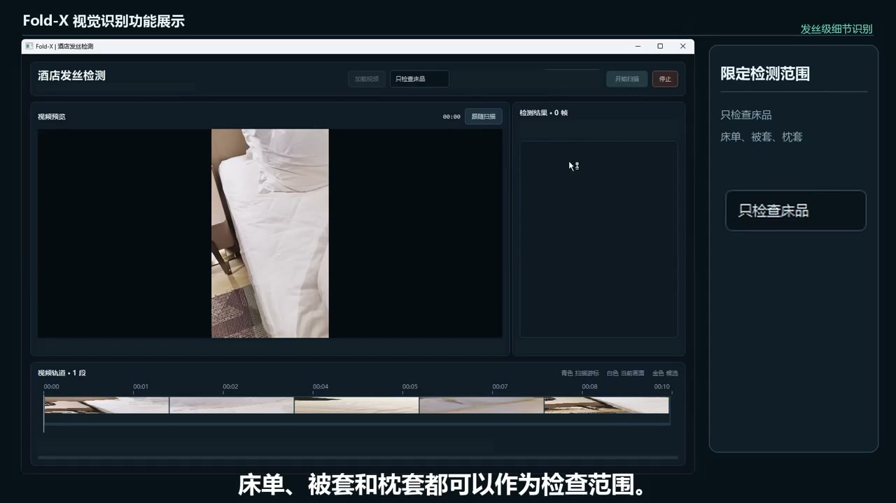
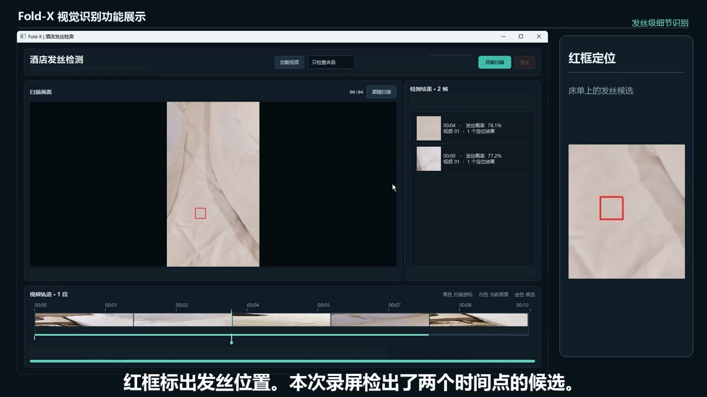
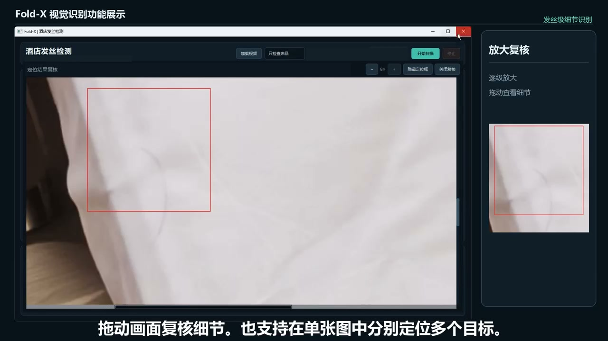

CASE 08 / Small-target & fine-detail recognition
Fine-detail recognition: find small targets and locate the evidence
The application searches bedding footage for fine, low-contrast hair candidates among fabric textures and folds, marks their locations, and opens enlarged views for review. The demo connects visual observation with inspectable evidence.
The progression now moves from recognizing objects and interpreting visual relationships to locating tiny targets—bringing close observation toward cleaning checks and production inspection.
Application potential · Turn details that require frame-by-frame searching into candidate locations for human review and records, with potential pilots in linen inspection and textile foreign-material screening.
Production applications to explore
- Hospitality and linen checks：Flag possible hair or foreign material on bedding for cleaning review.
- Textile and surface inspection：Explore fine-fiber, foreign-material, and small visual-anomaly screening, validated on samples from the intended materials and lighting.
- Production footage review and traceability：Route candidate frames and regions to human reviewers, with timestamps and supporting visual records.
These are proposed applications, not claims of a validated production deployment. A pilot should check missed targets, false positives, review workload, and processing time on representative footage.
Observations and evidence limits
- The demo first limits inspection to bedding, then scans the video and displays candidate results.
- The results list shows candidates at two timestamps. Red boxes mark locations, and opening a result enables progressively enlarged views.
- Candidate scores in the interface are not measured detection accuracy; this example does not establish reliable recognition of every small target.
This is a functional demo, without validated production-site miss rates, false-positive rates, or throughput. Display magnification does not increase the original image resolution.
Timing scope · The edited demo is approximately 46 seconds long and includes enlarged views. Its duration is not an end-to-end detection benchmark or evidence of millisecond latency.
Key frames





